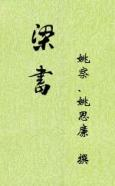

| 史籍 > |
| 梁书 |
| 作者：姚察、姚思廉 |
|
《梁书》，纪传体断代史，本纪6卷、列传50卷，共56卷。姚察、姚思廉编撰。记载自梁武帝萧衍建国至梁敬帝萧方智亡国共五十六年间的历史。姚思廉撰《梁书》，除了继承他父亲的遗稿以外，还参考、吸取了梁、陈、隋历朝史家编撰梁史的成果。 姚察（533-606），字伯审，吴兴武康人。历经梁、陈、隋三朝。父姚僧垣精医术，为梁大医正。姚察6岁诵书万余言，12岁能文。侯景之乱时，随父归乡里。年十三为萧纲所器重。萧纲登基，授南海王国左常侍，兼司文侍郎。入陈朝，为秘书监，领著作郎、吏部尚书等职。陈亡入隋，授秘书丞、晋王侍读，袭封北绛郡公，授太子内舍人。开皇九年奉诏撰《梁史》《陈史》，未竟而卒。 姚思廉（557-637），字简之。曾任隋代王杨侑侍读。李渊称帝后，为李世民秦王府文学馆学士。玄武门之变，进任太子洗马。贞观初年，任著作郎，为唐初“十八学士”之一。官至散骑常侍，受命与魏征同修梁陈二史。贞观十年（636），成《梁书》（50卷）、《陈书》（30卷）。另著有《文思博要》，失传。 （2020-4-30，整理-3） |
 |